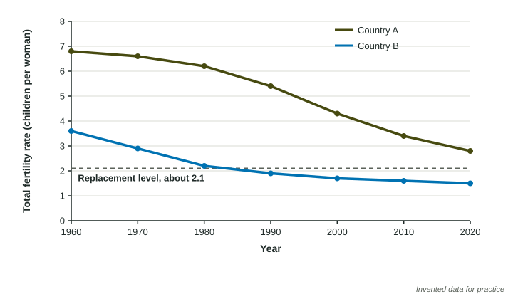

Population pyramids show how many young people a country has. The total fertility rate tells you how many children those young people are likely to have. Together they predict the future size of a population, and TFR is one of the numbers that has changed most in the last 60 years.
What total fertility rate means
The total fertility rate (TFR) is the average number of children a woman would have in her lifetime if birth patterns at each age stayed as they are now. A TFR of 3.0 means women, on average, have three children.
TFR is worked out from how often women of each age give birth. Birth data are given per 1,000 women per year in 5-year age groups. Add the rates, multiply by 5 (each age group lasts 5 years) and divide by 1,000 (to go from 1,000 women to one woman).
Worked example. In Country C, births per 1,000 women per year are 40 (ages 15-19), 120 (20-24), 130 (25-29), 90 (30-34), 40 (35-39), 10 (40-44) and 2 (45-49). What is the TFR?
Setup:
Answer: children per woman, just above replacement level.
Replacement level
Replacement-level fertility is the TFR at which each generation exactly replaces the one before. It is about 2.1 in countries where few children die young, not 2.0, for two reasons: some children die before they are old enough to have their own, and slightly more boys than girls are born. Where many children die young, replacement level is higher.

A TFR above 2.1 means a growing population in the long run. A TFR below 2.1 means, in the long run and without people moving in, a shrinking population. Because of population momentum, the change can take decades to show.
Infant mortality
Infant mortality is the number of babies who die before their first birthday per 1,000 live births. Where infant mortality is high, parents tend to have more children, partly to make sure some survive to adulthood. As clean water, vaccines and health care lower infant mortality, TFR usually falls too, often a few years later.
What raises and lowers fertility
| Tends to lower TFR | Tends to raise TFR |
|---|---|
| more schooling for girls and women | early marriage |
| more paid work for women | children working on family farms |
| easy access to family planning | little access to family planning |
| low infant mortality | high infant mortality |
| living in cities, where children cost more to raise | relying on children for support in old age |
| pensions for old age | cultural or religious values favoring large families |
Governments can influence TFR through policy. Free schooling for girls and family planning clinics lower it by widening choices. Some countries with low TFR offer payments or paid leave to parents to raise it, usually with small effects.
On the exam
- Compare a TFR with about 2.1 (not 2) to predict long-run growth or decline.
- Name a factor and explain how it changes TFR as a chain: schooling, later marriage and paid work, fewer children.
- For a calculation from age-group rates, show the sum, the × 5 and the ÷ 1,000.